Embeddings and visualisation: PCA, UMAP, t-SNE
Source:vignettes/articles/visualization.Rmd
visualization.Rmd
library(factomics)
sim <- simulate_multiomics(n_samples = 60, seed = 1)
res <- run_factor_pipeline(sim$data, methods = c("PCA", "MFA", "GFA", "JIVE"),
k = 4, verbose = FALSE)Factor scores directly
The most direct view of a factor model: plot one factor against another.
plot_factor_scores(res, factors = c(1, 2), metadata = sim$metadata,
color_by = "group")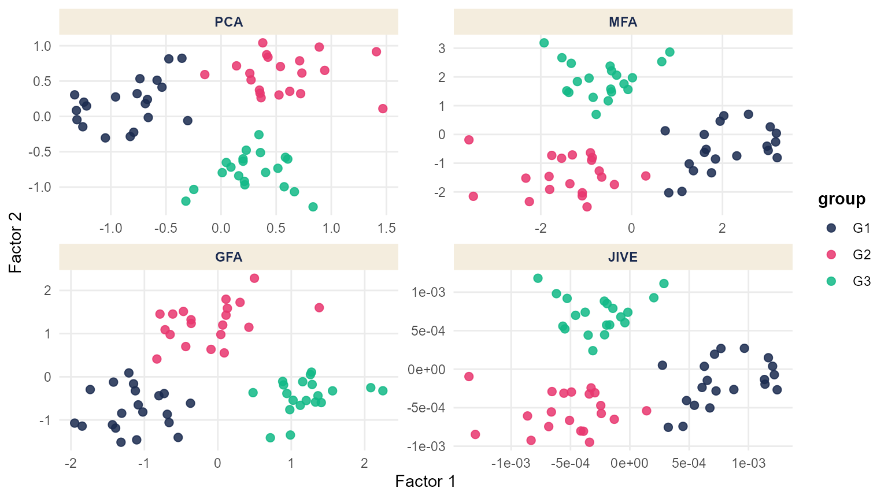
PCA, UMAP and t-SNE of the factor space
With more than two factors, a 2-D embedding shows the whole factor
space at once. embed_results() embeds the scores of every
method, plus the concatenated input data as a baseline, with any of the
three techniques:
emb <- embed_results(res, type = c("pca", "umap", "tsne"))
plot_embedding(emb, metadata = sim$metadata, color_by = "group")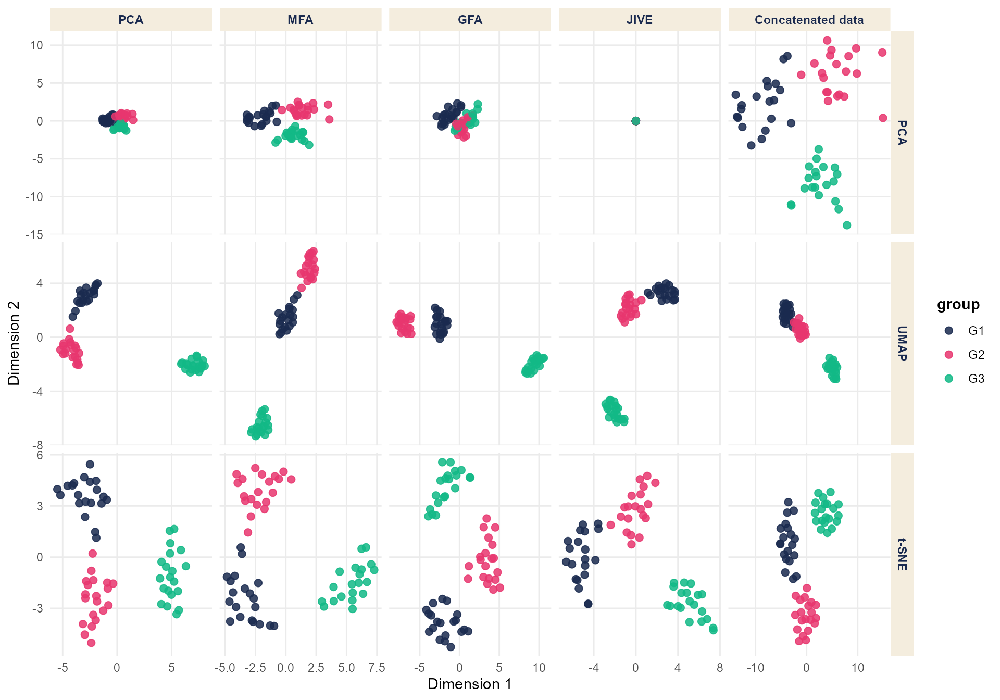
Points can also be shaped by a second variable:
emb_umap <- embed_results(res, type = "umap")
plot_embedding(emb_umap, metadata = sim$metadata, color_by = "group",
shape_by = "batch")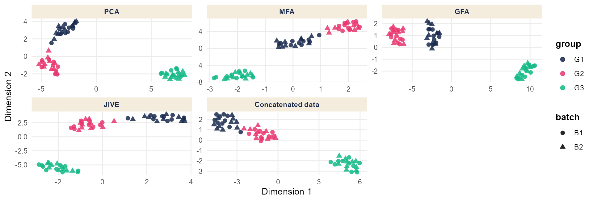
The defaults are chosen for the small sample sizes common in omics:
UMAP uses n_neighbors = min(15, n - 1) and t-SNE a
perplexity below (n - 1) / 3. Both can be changed, and
compute_embedding() works on any samples x features
matrix:
e <- compute_embedding(res$MFA$scores, type = "umap", n_neighbors = 10,
min_dist = 0.3)
head(e, 3)
#> sample Dim1 Dim2
#> 1 S001 -5.262751 -1.082647
#> 2 S002 -4.685367 -4.324579
#> 3 S003 8.827639 2.806306Variance explained
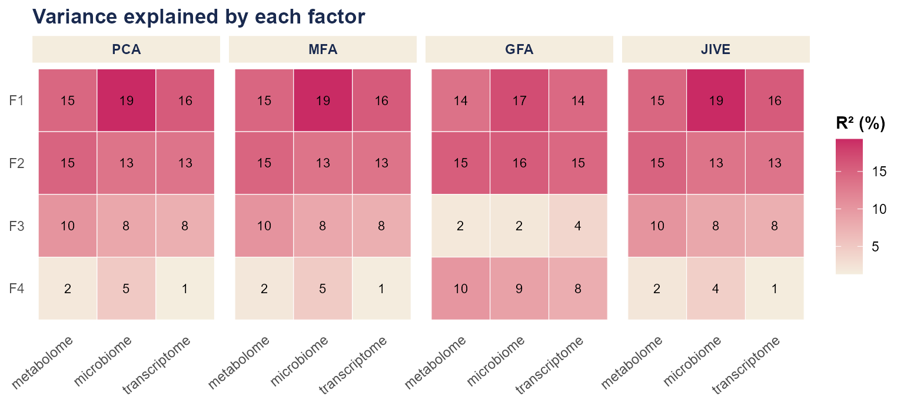
plot_variance_explained(res, type = "total")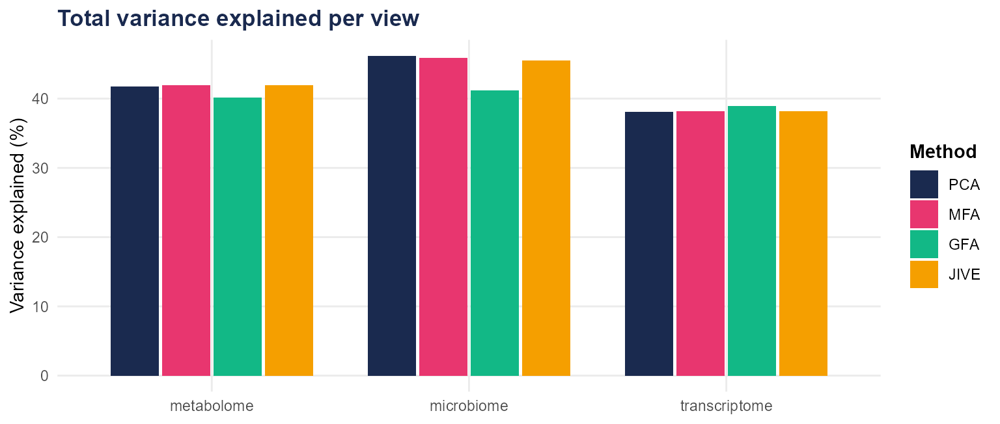
The underlying numbers are available as a table:
ve <- variance_explained(res)
head(ve[ve$factor == "Total", ])
#> method view factor R2
#> 5 PCA transcriptome Total 0.3811597
#> 10 PCA metabolome Total 0.4174590
#> 15 PCA microbiome Total 0.4618156
#> 20 MFA transcriptome Total 0.3820345
#> 25 MFA metabolome Total 0.4195281
#> 30 MFA microbiome Total 0.4585480Heatmap of factor scores
plot_factor_heatmap(res, "MFA", metadata = sim$metadata, order_by = "group")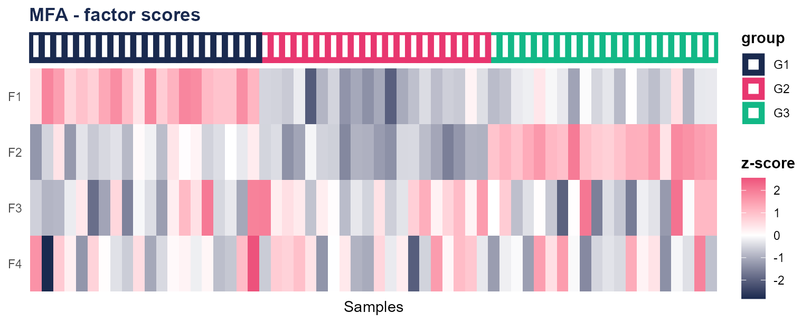
Top features of a factor
plot_top_loadings(res, "GFA", factor = 1, n = 25)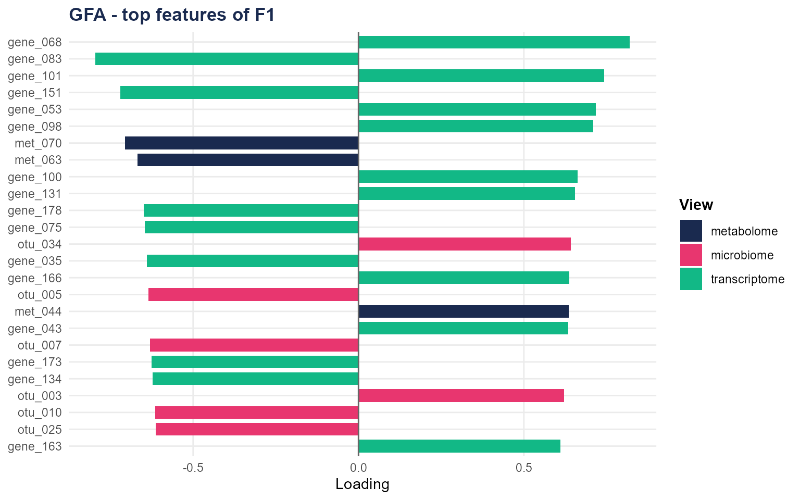
Restrict to one view:
plot_top_loadings(res, "GFA", factor = 1, n = 15, view = "metabolome")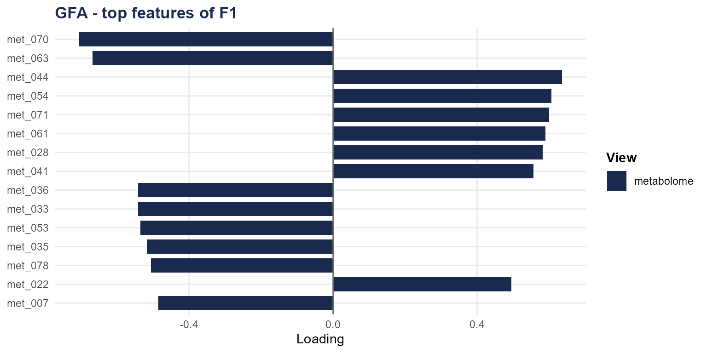
Factors and covariates
plot_factor_associations(res, sim$metadata, covariates = c("group", "batch",
"age"))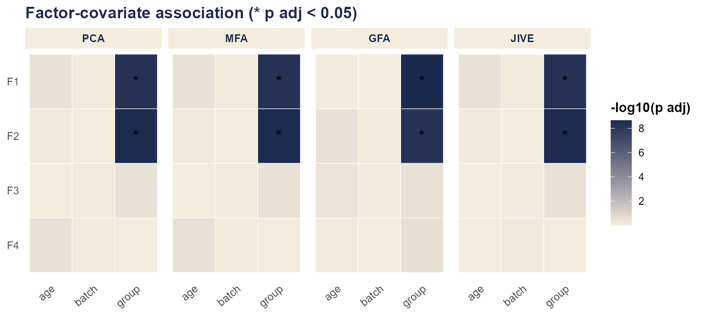
Comparing one factor across methods
plot_scores_scatter_grid() and
plot_scores_lollipop_grid() show one factor per method,
side by side. Each method’s factor is matched to the reference method’s
factor (by largest absolute correlation) and its sign aligned.
res <- attach_scores_metadata(res, sim$metadata)
plot_scores_scatter_grid(res, factor_idx = 1, group_col = "group",
align_to = "MFA")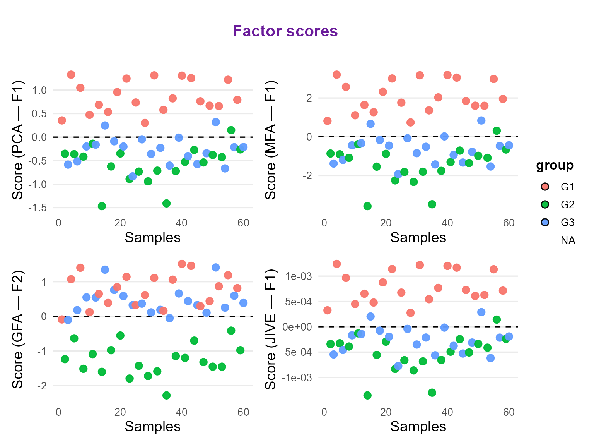
plot_scores_lollipop_grid(res, factor_idx = 1, group_col = "group",
baseline = "group_mean", align_to = "MFA")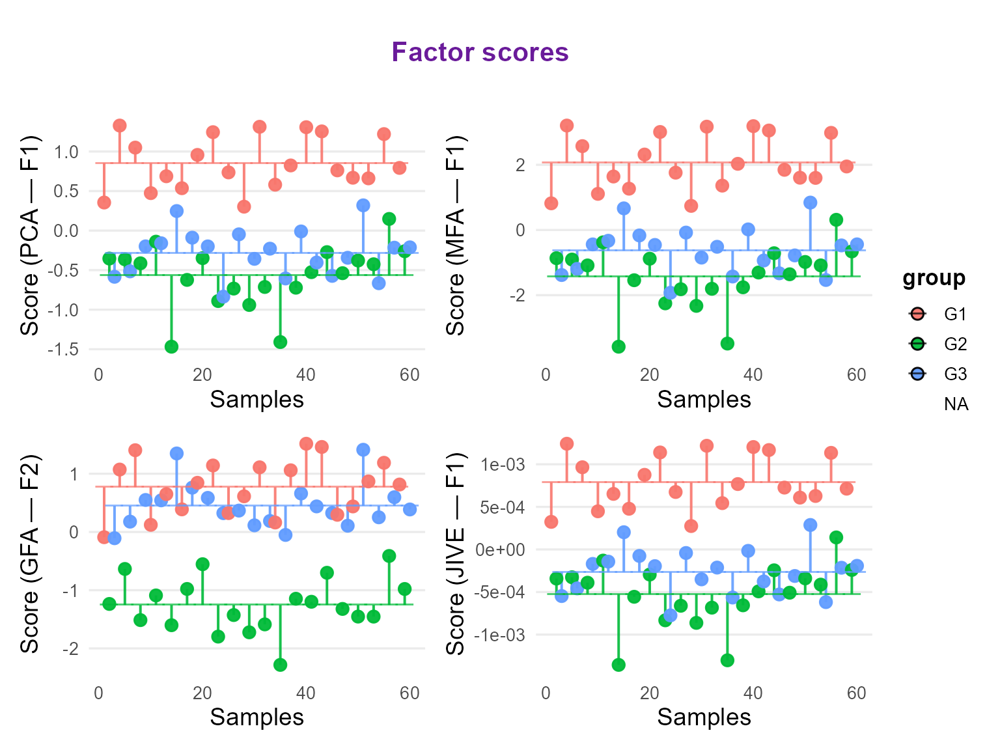
Theming
All plots are ggplot2 objects and use theme_factomics();
add or override layers as usual:
plot_embedding(emb_umap, sim$metadata, color_by = "group") +
ggplot2::theme_classic()